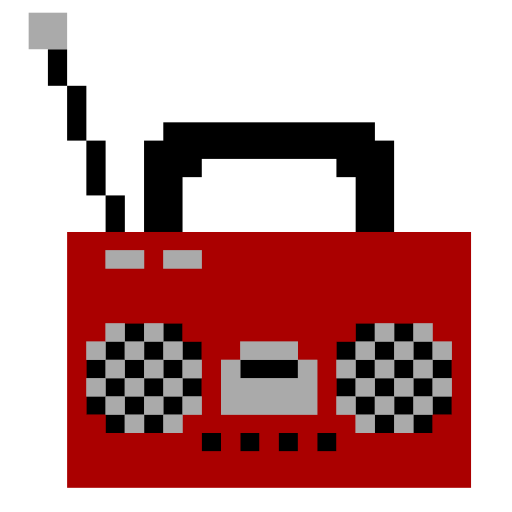
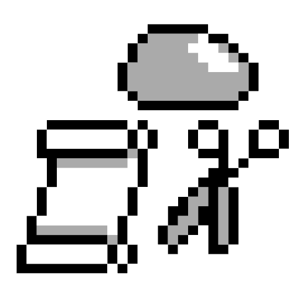

Portfólio
Estes são os meus principais projetos. Estou inserindo aqui os que considero mais legais ou completos. Para ver todos os outros acesse o meu repositório no GitHub.
Caso você queira comentar, sugerir ou falar algo sobre os projetos fique a vontade de entrar em contato =]
Paint CLI
Descrição: Esse programa é um paint, que permite seja feito desenhos pixealizados no próprio terminal. Sim! esse desenho foi feito utilizando o programa.
Linguagem: Shell Script
Repositório: github.com/Mewbi/Paint-CLI
Lazy Moon
Descrição: Esse foi o meu projeto de TCC do curso técnico de Redes de Computadores no SENAI.
Ele consiste em um conjunto de scripts de monitoramente e gerenciamento de rede LAN que pode ser acessado por redes externas (WAN).
Linguagem: Shell Script
Repositório: github.com/Mewbi/LazyMoon

Rádio Terminal
Descrição: Criado para ouvir músicas de rádios online com interface feita em puro bash no Linux, ou então ouvir em versão básica no Windows.
Linguagem: Shell Script, Batch
Repositório: github.com/Mewbi/Radio-Terminal

Diário SH
Descrição: Criado para realizar a criação e organização de um diário, fornecendo serviço de backup utilizando um e-mail para salvar.
Linguagem: Shell Script
Repositório: github.com/Mewbi/Diario-Shell-Script

Guess Number Multiplayer
Descrição: Jogo Guess Number feito para se jogar single player (Jogador e Máquina) ou multiplayer LAN
Linguagem: Shell Script
Repositório: github.com/Mewbi/Guess-Number-Multiplayer
Tic Tac Toe
Descrição: O famoso jogo "Tic Tac Toe", ou "Jogo da Velha" feito em C++ sendo jogado no terminal.
Linguagem: C++
Repositório: github.com/Mewbi/Tic-Tac-Toe

Jokenpo
Descrição: O famoso jogo 'jokenpô' também conhecido como 'pedra papel tesoura' feito em Shell Script.
Linguagem: Shell Script
Repositório: github.com/Mewbi/Jokenpo

Backup Terminal
Descrição: Uma maneira simples de realizer o backup de um arquivo para um e-mail via terminal.
Linguagem: Shell Script.
Repositório: github.com/Mewbi/Backup-terminal

Matemática
Descrição: Coletânea de mini programas que realizam processos matemáticos.
Seu principal objetivo é resolver diferentes situações matemáticas distintas, do qual cada programa trabalha independentemente, não existindo nenhuma relação entre eles.
Linguagem: C++, Shell Script
Repositório: github.com/Mewbi/Matematica

Análise Request
Descrição: O objetivo deste pequeno projeto é ter algo que faça uma análise do retorno de uma 'request' de um ou mais sites definido previamente pelo usuário.
Linguagem: Shell Script
Repositório: github.com/Mewbi/Analise-Request